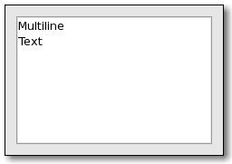

| GTK+ Reference Manual | ||||
|---|---|---|---|---|
GtkTextViewGtkTextView — Widget that displays a GtkTextBuffer |
 |
#include <gtk/gtk.h>
GtkTextView;
enum GtkTextWindowType;
GtkWidget* gtk_text_view_new (void);
GtkWidget* gtk_text_view_new_with_buffer (GtkTextBuffer *buffer);
void gtk_text_view_set_buffer (GtkTextView *text_view,
GtkTextBuffer *buffer);
GtkTextBuffer* gtk_text_view_get_buffer (GtkTextView *text_view);
void gtk_text_view_scroll_to_mark (GtkTextView *text_view,
GtkTextMark *mark,
gdouble within_margin,
gboolean use_align,
gdouble xalign,
gdouble yalign);
gboolean gtk_text_view_scroll_to_iter (GtkTextView *text_view,
GtkTextIter *iter,
gdouble within_margin,
gboolean use_align,
gdouble xalign,
gdouble yalign);
void gtk_text_view_scroll_mark_onscreen
(GtkTextView *text_view,
GtkTextMark *mark);
gboolean gtk_text_view_move_mark_onscreen
(GtkTextView *text_view,
GtkTextMark *mark);
gboolean gtk_text_view_place_cursor_onscreen
(GtkTextView *text_view);
void gtk_text_view_get_visible_rect (GtkTextView *text_view,
GdkRectangle *visible_rect);
void gtk_text_view_get_iter_location (GtkTextView *text_view,
const GtkTextIter *iter,
GdkRectangle *location);
void gtk_text_view_get_line_at_y (GtkTextView *text_view,
GtkTextIter *target_iter,
gint y,
gint *line_top);
void gtk_text_view_get_line_yrange (GtkTextView *text_view,
const GtkTextIter *iter,
gint *y,
gint *height);
void gtk_text_view_get_iter_at_location
(GtkTextView *text_view,
GtkTextIter *iter,
gint x,
gint y);
void gtk_text_view_get_iter_at_position
(GtkTextView *text_view,
GtkTextIter *iter,
gint *trailing,
gint x,
gint y);
void gtk_text_view_buffer_to_window_coords
(GtkTextView *text_view,
GtkTextWindowType win,
gint buffer_x,
gint buffer_y,
gint *window_x,
gint *window_y);
void gtk_text_view_window_to_buffer_coords
(GtkTextView *text_view,
GtkTextWindowType win,
gint window_x,
gint window_y,
gint *buffer_x,
gint *buffer_y);
GdkWindow* gtk_text_view_get_window (GtkTextView *text_view,
GtkTextWindowType win);
GtkTextWindowType gtk_text_view_get_window_type
(GtkTextView *text_view,
GdkWindow *window);
void gtk_text_view_set_border_window_size
(GtkTextView *text_view,
GtkTextWindowType type,
gint size);
gint gtk_text_view_get_border_window_size
(GtkTextView *text_view,
GtkTextWindowType type);
gboolean gtk_text_view_forward_display_line
(GtkTextView *text_view,
GtkTextIter *iter);
gboolean gtk_text_view_backward_display_line
(GtkTextView *text_view,
GtkTextIter *iter);
gboolean gtk_text_view_forward_display_line_end
(GtkTextView *text_view,
GtkTextIter *iter);
gboolean gtk_text_view_backward_display_line_start
(GtkTextView *text_view,
GtkTextIter *iter);
gboolean gtk_text_view_starts_display_line
(GtkTextView *text_view,
const GtkTextIter *iter);
gboolean gtk_text_view_move_visually (GtkTextView *text_view,
GtkTextIter *iter,
gint count);
void gtk_text_view_add_child_at_anchor
(GtkTextView *text_view,
GtkWidget *child,
GtkTextChildAnchor *anchor);
GtkTextChildAnchor;
GtkTextChildAnchor* gtk_text_child_anchor_new
(void);
GList* gtk_text_child_anchor_get_widgets
(GtkTextChildAnchor *anchor);
gboolean gtk_text_child_anchor_get_deleted
(GtkTextChildAnchor *anchor);
void gtk_text_view_add_child_in_window
(GtkTextView *text_view,
GtkWidget *child,
GtkTextWindowType which_window,
gint xpos,
gint ypos);
void gtk_text_view_move_child (GtkTextView *text_view,
GtkWidget *child,
gint xpos,
gint ypos);
void gtk_text_view_set_wrap_mode (GtkTextView *text_view,
GtkWrapMode wrap_mode);
GtkWrapMode gtk_text_view_get_wrap_mode (GtkTextView *text_view);
void gtk_text_view_set_editable (GtkTextView *text_view,
gboolean setting);
gboolean gtk_text_view_get_editable (GtkTextView *text_view);
void gtk_text_view_set_cursor_visible
(GtkTextView *text_view,
gboolean setting);
gboolean gtk_text_view_get_cursor_visible
(GtkTextView *text_view);
void gtk_text_view_set_overwrite (GtkTextView *text_view,
gboolean overwrite);
gboolean gtk_text_view_get_overwrite (GtkTextView *text_view);
void gtk_text_view_set_pixels_above_lines
(GtkTextView *text_view,
gint pixels_above_lines);
gint gtk_text_view_get_pixels_above_lines
(GtkTextView *text_view);
void gtk_text_view_set_pixels_below_lines
(GtkTextView *text_view,
gint pixels_below_lines);
gint gtk_text_view_get_pixels_below_lines
(GtkTextView *text_view);
void gtk_text_view_set_pixels_inside_wrap
(GtkTextView *text_view,
gint pixels_inside_wrap);
gint gtk_text_view_get_pixels_inside_wrap
(GtkTextView *text_view);
void gtk_text_view_set_justification (GtkTextView *text_view,
GtkJustification justification);
GtkJustification gtk_text_view_get_justification
(GtkTextView *text_view);
void gtk_text_view_set_left_margin (GtkTextView *text_view,
gint left_margin);
gint gtk_text_view_get_left_margin (GtkTextView *text_view);
void gtk_text_view_set_right_margin (GtkTextView *text_view,
gint right_margin);
gint gtk_text_view_get_right_margin (GtkTextView *text_view);
void gtk_text_view_set_indent (GtkTextView *text_view,
gint indent);
gint gtk_text_view_get_indent (GtkTextView *text_view);
void gtk_text_view_set_tabs (GtkTextView *text_view,
PangoTabArray *tabs);
PangoTabArray* gtk_text_view_get_tabs (GtkTextView *text_view);
void gtk_text_view_set_accepts_tab (GtkTextView *text_view,
gboolean accepts_tab);
gboolean gtk_text_view_get_accepts_tab (GtkTextView *text_view);
GtkTextAttributes* gtk_text_view_get_default_attributes
(GtkTextView *text_view);
#define GTK_TEXT_VIEW_PRIORITY_VALIDATE
GObject +----GInitiallyUnowned +----GtkObject +----GtkWidget +----GtkContainer +----GtkTextView
GObject +----GtkTextChildAnchor
"accepts-tab" gboolean : Read / Write "buffer" GtkTextBuffer : Read / Write "cursor-visible" gboolean : Read / Write "editable" gboolean : Read / Write "indent" gint : Read / Write "justification" GtkJustification : Read / Write "left-margin" gint : Read / Write "overwrite" gboolean : Read / Write "pixels-above-lines" gint : Read / Write "pixels-below-lines" gint : Read / Write "pixels-inside-wrap" gint : Read / Write "right-margin" gint : Read / Write "tabs" PangoTabArray : Read / Write "wrap-mode" GtkWrapMode : Read / Write
"backspace" void user_function (GtkTextView *textview, gpointer user_data) : Run last / Action "copy-clipboard" void user_function (GtkTextView *textview, gpointer user_data) : Run last / Action "cut-clipboard" void user_function (GtkTextView *textview, gpointer user_data) : Run last / Action "delete-from-cursor" void user_function (GtkTextView *textview, GtkDeleteType arg1, gint arg2, gpointer user_data) : Run last / Action "insert-at-cursor" void user_function (GtkTextView *textview, gchar *arg1, gpointer user_data) : Run last / Action "move-cursor" void user_function (GtkTextView *widget, GtkMovementStep step, gint count, gboolean extend_selection, gpointer user_data) : Run last / Action "move-focus" void user_function (GtkTextView *textview, GtkDirectionType arg1, gpointer user_data) : Run last / Action "move-viewport" void user_function (GtkTextView *textview, GtkScrollStep arg1, gint arg2, gpointer user_data) : Run last / Action "page-horizontally" void user_function (GtkTextView *textview, gint arg1, gboolean arg2, gpointer user_data) : Run last / Action "paste-clipboard" void user_function (GtkTextView *textview, gpointer user_data) : Run last / Action "populate-popup" void user_function (GtkTextView *textview, GtkMenu *arg1, gpointer user_data) : Run last "select-all" void user_function (GtkTextView *textview, gboolean arg1, gpointer user_data) : Run last / Action "set-anchor" void user_function (GtkTextView *textview, gpointer user_data) : Run last / Action "set-scroll-adjustments" void user_function (GtkTextView *textview, GtkAdjustment *arg1, GtkAdjustment *arg2, gpointer user_data) : Run last / Action "toggle-overwrite" void user_function (GtkTextView *textview, gpointer user_data) : Run last / Action
You may wish to begin by reading the text widget conceptual overview which gives an overview of all the objects and data types related to the text widget and how they work together.
typedef enum
{
GTK_TEXT_WINDOW_PRIVATE,
GTK_TEXT_WINDOW_WIDGET,
GTK_TEXT_WINDOW_TEXT,
GTK_TEXT_WINDOW_LEFT,
GTK_TEXT_WINDOW_RIGHT,
GTK_TEXT_WINDOW_TOP,
GTK_TEXT_WINDOW_BOTTOM
} GtkTextWindowType;
GtkWidget* gtk_text_view_new (void);
Creates a new GtkTextView. If you don't call gtk_text_view_set_buffer() before using the text view, an empty default buffer will be created for you. Get the buffer with gtk_text_view_get_buffer(). If you want to specify your own buffer, consider gtk_text_view_new_with_buffer().
| Returns : | a new GtkTextView |
GtkWidget* gtk_text_view_new_with_buffer (GtkTextBuffer *buffer);
Creates a new GtkTextView widget displaying the buffer buffer. One buffer can be shared among many widgets. buffer may be NULL to create a default buffer, in which case this function is equivalent to gtk_text_view_new(). The text view adds its own reference count to the buffer; it does not take over an existing reference.
| buffer : | a GtkTextBuffer |
| Returns : | a new GtkTextView. |
void gtk_text_view_set_buffer (GtkTextView *text_view, GtkTextBuffer *buffer);
Sets buffer as the buffer being displayed by text_view. The previous buffer displayed by the text view is unreferenced, and a reference is added to buffer. If you owned a reference to buffer before passing it to this function, you must remove that reference yourself; GtkTextView will not "adopt" it.
| text_view : | a GtkTextView |
| buffer : | a GtkTextBuffer |
GtkTextBuffer* gtk_text_view_get_buffer (GtkTextView *text_view);
Returns the GtkTextBuffer being displayed by this text view. The reference count on the buffer is not incremented; the caller of this function won't own a new reference.
| text_view : | a GtkTextView |
| Returns : | a GtkTextBuffer |
void gtk_text_view_scroll_to_mark (GtkTextView *text_view, GtkTextMark *mark, gdouble within_margin, gboolean use_align, gdouble xalign, gdouble yalign);
Scrolls text_view so that mark is on the screen in the position indicated by xalign and yalign. An alignment of 0.0 indicates left or top, 1.0 indicates right or bottom, 0.5 means center. If use_align is FALSE, the text scrolls the minimal distance to get the mark onscreen, possibly not scrolling at all. The effective screen for purposes of this function is reduced by a margin of size within_margin.
| text_view : | a GtkTextView |
| mark : | a GtkTextMark |
| within_margin : | margin as a [0.0,0.5) fraction of screen size |
| use_align : | whether to use alignment arguments (if FALSE, just get the mark onscreen) |
| xalign : | horizontal alignment of mark within visible area. |
| yalign : | vertical alignment of mark within visible area |
gboolean gtk_text_view_scroll_to_iter (GtkTextView *text_view, GtkTextIter *iter, gdouble within_margin, gboolean use_align, gdouble xalign, gdouble yalign);
Scrolls text_view so that iter is on the screen in the position indicated by xalign and yalign. An alignment of 0.0 indicates left or top, 1.0 indicates right or bottom, 0.5 means center. If use_align is FALSE, the text scrolls the minimal distance to get the mark onscreen, possibly not scrolling at all. The effective screen for purposes of this function is reduced by a margin of size within_margin. NOTE: This function uses the currently-computed height of the lines in the text buffer. Note that line heights are computed in an idle handler; so this function may not have the desired effect if it's called before the height computations. To avoid oddness, consider using gtk_text_view_scroll_to_mark() which saves a point to be scrolled to after line validation.
| text_view : | a GtkTextView |
| iter : | a GtkTextIter |
| within_margin : | margin as a [0.0,0.5) fraction of screen size |
| use_align : | whether to use alignment arguments (if FALSE, just get the mark onscreen) |
| xalign : | horizontal alignment of mark within visible area. |
| yalign : | vertical alignment of mark within visible area |
| Returns : | TRUE if scrolling occurred |
void gtk_text_view_scroll_mark_onscreen
(GtkTextView *text_view,
GtkTextMark *mark);
Scrolls text_view the minimum distance such that mark is contained within the visible area of the widget.
| text_view : | a GtkTextView |
| mark : | a mark in the buffer for text_view |
gboolean gtk_text_view_move_mark_onscreen (GtkTextView *text_view, GtkTextMark *mark);
Moves a mark within the buffer so that it's located within the currently-visible text area.
| text_view : | a GtkTextView |
| mark : | a GtkTextMark |
| Returns : | TRUE if the mark moved (wasn't already onscreen) |
gboolean gtk_text_view_place_cursor_onscreen (GtkTextView *text_view);
Moves the cursor to the currently visible region of the buffer, it it isn't there already.
| text_view : | a GtkTextView |
| Returns : | TRUE if the cursor had to be moved. |
void gtk_text_view_get_visible_rect (GtkTextView *text_view, GdkRectangle *visible_rect);
Fills visible_rect with the currently-visible region of the buffer, in buffer coordinates. Convert to window coordinates with gtk_text_view_buffer_to_window_coords().
| text_view : | a GtkTextView |
| visible_rect : | rectangle to fill |
void gtk_text_view_get_iter_location (GtkTextView *text_view, const GtkTextIter *iter, GdkRectangle *location);
Gets a rectangle which roughly contains the character at iter. The rectangle position is in buffer coordinates; use gtk_text_view_buffer_to_window_coords() to convert these coordinates to coordinates for one of the windows in the text view.
| text_view : | a GtkTextView |
| iter : | a GtkTextIter |
| location : | bounds of the character at iter |
void gtk_text_view_get_line_at_y (GtkTextView *text_view, GtkTextIter *target_iter, gint y, gint *line_top);
Gets the GtkTextIter at the start of the line containing the coordinate y. y is in buffer coordinates, convert from window coordinates with gtk_text_view_window_to_buffer_coords(). If non-NULL, line_top will be filled with the coordinate of the top edge of the line.
| text_view : | a GtkTextView |
| target_iter : | a GtkTextIter |
| y : | a y coordinate |
| line_top : | return location for top coordinate of the line |
void gtk_text_view_get_line_yrange (GtkTextView *text_view, const GtkTextIter *iter, gint *y, gint *height);
Gets the y coordinate of the top of the line containing iter, and the height of the line. The coordinate is a buffer coordinate; convert to window coordinates with gtk_text_view_buffer_to_window_coords().
| text_view : | a GtkTextView |
| iter : | a GtkTextIter |
| y : | return location for a y coordinate |
| height : | return location for a height |
void gtk_text_view_get_iter_at_location
(GtkTextView *text_view,
GtkTextIter *iter,
gint x,
gint y);
Retrieves the iterator at buffer coordinates x and y. Buffer coordinates are coordinates for the entire buffer, not just the currently-displayed portion. If you have coordinates from an event, you have to convert those to buffer coordinates with gtk_text_view_window_to_buffer_coords().
| text_view : | a GtkTextView |
| iter : | a GtkTextIter |
| x : | x position, in buffer coordinates |
| y : | y position, in buffer coordinates |
void gtk_text_view_get_iter_at_position
(GtkTextView *text_view,
GtkTextIter *iter,
gint *trailing,
gint x,
gint y);
Retrieves the iterator pointing to the character at buffer coordinates x and y. Buffer coordinates are coordinates for the entire buffer, not just the currently-displayed portion. If you have coordinates from an event, you have to convert those to buffer coordinates with gtk_text_view_window_to_buffer_coords().
Note that this is different from gtk_text_view_get_iter_at_location(), which returns cursor locations, i.e. positions between characters.
| text_view : | a GtkTextView |
| iter : | a GtkTextIter |
| trailing : | location to store an integer indicating where in the grapheme the user clicked. It will either be zero, or the number of characters in the grapheme. 0 represents the trailing edge of the grapheme. |
| x : | x position, in buffer coordinates |
| y : | y position, in buffer coordinates |
Since 2.6
void gtk_text_view_buffer_to_window_coords
(GtkTextView *text_view,
GtkTextWindowType win,
gint buffer_x,
gint buffer_y,
gint *window_x,
gint *window_y);
Converts coordinate (buffer_x, buffer_y) to coordinates for the window win, and stores the result in (window_x, window_y).
Note that you can't convert coordinates for a nonexisting window (see gtk_text_view_set_border_window_size()).
| text_view : | a GtkTextView |
| win : | a GtkTextWindowType except GTK_TEXT_WINDOW_PRIVATE |
| buffer_x : | buffer x coordinate |
| buffer_y : | buffer y coordinate |
| window_x : | window x coordinate return location |
| window_y : | window y coordinate return location |
void gtk_text_view_window_to_buffer_coords
(GtkTextView *text_view,
GtkTextWindowType win,
gint window_x,
gint window_y,
gint *buffer_x,
gint *buffer_y);
Converts coordinates on the window identified by win to buffer coordinates, storing the result in (buffer_x,buffer_y).
Note that you can't convert coordinates for a nonexisting window (see gtk_text_view_set_border_window_size()).
| text_view : | a GtkTextView |
| win : | a GtkTextWindowType except GTK_TEXT_WINDOW_PRIVATE |
| window_x : | window x coordinate |
| window_y : | window y coordinate |
| buffer_x : | buffer x coordinate return location |
| buffer_y : | buffer y coordinate return location |
GdkWindow* gtk_text_view_get_window (GtkTextView *text_view, GtkTextWindowType win);
Retrieves the GdkWindow corresponding to an area of the text view; possible windows include the overall widget window, child windows on the left, right, top, bottom, and the window that displays the text buffer. Windows are NULL and nonexistent if their width or height is 0, and are nonexistent before the widget has been realized.
| text_view : | a GtkTextView |
| win : | window to get |
| Returns : | a GdkWindow, or NULL |
GtkTextWindowType gtk_text_view_get_window_type (GtkTextView *text_view, GdkWindow *window);
Usually used to find out which window an event corresponds to. If you connect to an event signal on text_view, this function should be called on event->window to see which window it was.
| text_view : | a GtkTextView |
| window : | a window type |
| Returns : | the window type. |
void gtk_text_view_set_border_window_size
(GtkTextView *text_view,
GtkTextWindowType type,
gint size);
Sets the width of GTK_TEXT_WINDOW_LEFT or GTK_TEXT_WINDOW_RIGHT, or the height of GTK_TEXT_WINDOW_TOP or GTK_TEXT_WINDOW_BOTTOM. Automatically destroys the corresponding window if the size is set to 0, and creates the window if the size is set to non-zero. This function can only be used for the "border windows," it doesn't work with GTK_TEXT_WINDOW_WIDGET, GTK_TEXT_WINDOW_TEXT, or GTK_TEXT_WINDOW_PRIVATE.
| text_view : | a GtkTextView |
| type : | window to affect |
| size : | width or height of the window |
gint gtk_text_view_get_border_window_size (GtkTextView *text_view, GtkTextWindowType type);
Gets the width of the specified border window. See gtk_text_view_set_border_window_size().
| text_view : | a GtkTextView |
| type : | window to return size from |
| Returns : | width of window |
gboolean gtk_text_view_forward_display_line (GtkTextView *text_view, GtkTextIter *iter);
Moves the given iter forward by one display (wrapped) line. A display line is different from a paragraph. Paragraphs are separated by newlines or other paragraph separator characters. Display lines are created by line-wrapping a paragraph. If wrapping is turned off, display lines and paragraphs will be the same. Display lines are divided differently for each view, since they depend on the view's width; paragraphs are the same in all views, since they depend on the contents of the GtkTextBuffer.
| text_view : | a GtkTextView |
| iter : | a GtkTextIter |
| Returns : | TRUE if iter was moved and is not on the end iterator |
gboolean gtk_text_view_backward_display_line (GtkTextView *text_view, GtkTextIter *iter);
Moves the given iter backward by one display (wrapped) line. A display line is different from a paragraph. Paragraphs are separated by newlines or other paragraph separator characters. Display lines are created by line-wrapping a paragraph. If wrapping is turned off, display lines and paragraphs will be the same. Display lines are divided differently for each view, since they depend on the view's width; paragraphs are the same in all views, since they depend on the contents of the GtkTextBuffer.
| text_view : | a GtkTextView |
| iter : | a GtkTextIter |
| Returns : | TRUE if iter was moved and is not on the end iterator |
gboolean gtk_text_view_forward_display_line_end (GtkTextView *text_view, GtkTextIter *iter);
Moves the given iter forward to the next display line end. A display line is different from a paragraph. Paragraphs are separated by newlines or other paragraph separator characters. Display lines are created by line-wrapping a paragraph. If wrapping is turned off, display lines and paragraphs will be the same. Display lines are divided differently for each view, since they depend on the view's width; paragraphs are the same in all views, since they depend on the contents of the GtkTextBuffer.
| text_view : | a GtkTextView |
| iter : | a GtkTextIter |
| Returns : | TRUE if iter was moved and is not on the end iterator |
gboolean gtk_text_view_backward_display_line_start (GtkTextView *text_view, GtkTextIter *iter);
Moves the given iter backward to the next display line start. A display line is different from a paragraph. Paragraphs are separated by newlines or other paragraph separator characters. Display lines are created by line-wrapping a paragraph. If wrapping is turned off, display lines and paragraphs will be the same. Display lines are divided differently for each view, since they depend on the view's width; paragraphs are the same in all views, since they depend on the contents of the GtkTextBuffer.
| text_view : | a GtkTextView |
| iter : | a GtkTextIter |
| Returns : | TRUE if iter was moved and is not on the end iterator |
gboolean gtk_text_view_starts_display_line (GtkTextView *text_view, const GtkTextIter *iter);
Determines whether iter is at the start of a display line. See gtk_text_view_forward_display_line() for an explanation of display lines vs. paragraphs.
| text_view : | a GtkTextView |
| iter : | a GtkTextIter |
| Returns : | TRUE if iter begins a wrapped line |
gboolean gtk_text_view_move_visually (GtkTextView *text_view, GtkTextIter *iter, gint count);
Move the iterator a given number of characters visually, treating it as the strong cursor position. If count is positive, then the new strong cursor position will be count positions to the right of the old cursor position. If count is negative then the new strong cursor position will be count positions to the left of the old cursor position.
In the presence of bidirection text, the correspondence between logical and visual order will depend on the direction of the current run, and there may be jumps when the cursor is moved off of the end of a run.
| text_view : | a GtkTextView |
| iter : | a GtkTextIter |
| count : | number of characters to move (negative moves left, positive moves right) |
| Returns : | TRUE if iter moved and is not on the end iterator |
void gtk_text_view_add_child_at_anchor
(GtkTextView *text_view,
GtkWidget *child,
GtkTextChildAnchor *anchor);
Adds a child widget in the text buffer, at the given anchor.
| text_view : | a GtkTextView |
| child : | a GtkWidget |
| anchor : | a GtkTextChildAnchor in the GtkTextBuffer for text_view |
typedef struct _GtkTextChildAnchor GtkTextChildAnchor;
A GtkTextChildAnchor is a spot in the buffer where child widgets can be "anchored" (inserted inline, as if they were characters). The anchor can have multiple widgets anchored, to allow for multiple views.
GtkTextChildAnchor* gtk_text_child_anchor_new (void);
Creates a new GtkTextChildAnchor. Usually you would then insert it into a GtkTextBuffer with gtk_text_buffer_insert_child_anchor(). To perform the creation and insertion in one step, use the convenience function gtk_text_buffer_create_child_anchor().
| Returns : | a new GtkTextChildAnchor |
GList* gtk_text_child_anchor_get_widgets (GtkTextChildAnchor *anchor);
Gets a list of all widgets anchored at this child anchor. The returned list should be freed with g_list_free().
| anchor : | a GtkTextChildAnchor |
| Returns : | list of widgets anchored at anchor |
gboolean gtk_text_child_anchor_get_deleted (GtkTextChildAnchor *anchor);
Determines whether a child anchor has been deleted from the buffer. Keep in mind that the child anchor will be unreferenced when removed from the buffer, so you need to hold your own reference (with g_object_ref()) if you plan to use this function — otherwise all deleted child anchors will also be finalized.
| anchor : | a GtkTextChildAnchor |
| Returns : | TRUE if the child anchor has been deleted from its buffer |
void gtk_text_view_add_child_in_window
(GtkTextView *text_view,
GtkWidget *child,
GtkTextWindowType which_window,
gint xpos,
gint ypos);
Adds a child at fixed coordinates in one of the text widget's windows. The window must have nonzero size (see gtk_text_view_set_border_window_size()). Note that the child coordinates are given relative to the GdkWindow in question, and that these coordinates have no sane relationship to scrolling. When placing a child in GTK_TEXT_WINDOW_WIDGET, scrolling is irrelevant, the child floats above all scrollable areas. But when placing a child in one of the scrollable windows (border windows or text window), you'll need to compute the child's correct position in buffer coordinates any time scrolling occurs or buffer changes occur, and then call gtk_text_view_move_child() to update the child's position. Unfortunately there's no good way to detect that scrolling has occurred, using the current API; a possible hack would be to update all child positions when the scroll adjustments change or the text buffer changes. See bug 64518 on bugzilla.gnome.org for status of fixing this issue.
| text_view : | a GtkTextView |
| child : | a GtkWidget |
| which_window : | which window the child should appear in |
| xpos : | X position of child in window coordinates |
| ypos : | Y position of child in window coordinates |
void gtk_text_view_move_child (GtkTextView *text_view, GtkWidget *child, gint xpos, gint ypos);
Updates the position of a child, as for gtk_text_view_add_child_in_window().
| text_view : | a GtkTextView |
| child : | child widget already added to the text view |
| xpos : | new X position in window coordinates |
| ypos : | new Y position in window coordinates |
void gtk_text_view_set_wrap_mode (GtkTextView *text_view, GtkWrapMode wrap_mode);
Sets the line wrapping for the view.
| text_view : | a GtkTextView |
| wrap_mode : | a GtkWrapMode |
GtkWrapMode gtk_text_view_get_wrap_mode (GtkTextView *text_view);
Gets the line wrapping for the view.
| text_view : | a GtkTextView |
| Returns : | the line wrap setting |
void gtk_text_view_set_editable (GtkTextView *text_view, gboolean setting);
Sets the default editability of the GtkTextView. You can override this default setting with tags in the buffer, using the "editable" attribute of tags.
| text_view : | a GtkTextView |
| setting : | whether it's editable |
gboolean gtk_text_view_get_editable (GtkTextView *text_view);
Returns the default editability of the GtkTextView. Tags in the buffer may override this setting for some ranges of text.
| text_view : | a GtkTextView |
| Returns : | whether text is editable by default |
void gtk_text_view_set_cursor_visible
(GtkTextView *text_view,
gboolean setting);
Toggles whether the insertion point is displayed. A buffer with no editable text probably shouldn't have a visible cursor, so you may want to turn the cursor off.
| text_view : | a GtkTextView |
| setting : | whether to show the insertion cursor |
gboolean gtk_text_view_get_cursor_visible (GtkTextView *text_view);
Find out whether the cursor is being displayed.
| text_view : | a GtkTextView |
| Returns : | whether the insertion mark is visible |
void gtk_text_view_set_overwrite (GtkTextView *text_view, gboolean overwrite);
Changes the GtkTextView overwrite mode.
| text_view : | a GtkTextView |
| overwrite : | TRUE to turn on overwrite mode, FALSE to turn it off |
Since 2.4
gboolean gtk_text_view_get_overwrite (GtkTextView *text_view);
Returns whether the GtkTextView is in overwrite mode or not.
| text_view : | a GtkTextView |
| Returns : | whether text_view is in overwrite mode or not. |
Since 2.4
void gtk_text_view_set_pixels_above_lines
(GtkTextView *text_view,
gint pixels_above_lines);
Sets the default number of blank pixels above paragraphs in text_view. Tags in the buffer for text_view may override the defaults.
| text_view : | a GtkTextView |
| pixels_above_lines : | pixels above paragraphs |
gint gtk_text_view_get_pixels_above_lines (GtkTextView *text_view);
Gets the default number of pixels to put above paragraphs.
| text_view : | a GtkTextView |
| Returns : | default number of pixels above paragraphs |
void gtk_text_view_set_pixels_below_lines
(GtkTextView *text_view,
gint pixels_below_lines);
Sets the default number of pixels of blank space to put below paragraphs in text_view. May be overridden by tags applied to text_view's buffer.
| text_view : | a GtkTextView |
| pixels_below_lines : | pixels below paragraphs |
gint gtk_text_view_get_pixels_below_lines (GtkTextView *text_view);
Gets the value set by gtk_text_view_set_pixels_below_lines().
| text_view : | a GtkTextView |
| Returns : | default number of blank pixels below paragraphs |
void gtk_text_view_set_pixels_inside_wrap
(GtkTextView *text_view,
gint pixels_inside_wrap);
Sets the default number of pixels of blank space to leave between display/wrapped lines within a paragraph. May be overridden by tags in text_view's buffer.
| text_view : | a GtkTextView |
| pixels_inside_wrap : | default number of pixels between wrapped lines |
gint gtk_text_view_get_pixels_inside_wrap (GtkTextView *text_view);
Gets the value set by gtk_text_view_set_pixels_inside_wrap().
| text_view : | a GtkTextView |
| Returns : | default number of pixels of blank space between wrapped lines |
void gtk_text_view_set_justification (GtkTextView *text_view, GtkJustification justification);
Sets the default justification of text in text_view. Tags in the view's buffer may override the default.
| text_view : | a GtkTextView |
| justification : | justification |
GtkJustification gtk_text_view_get_justification (GtkTextView *text_view);
Gets the default justification of paragraphs in text_view. Tags in the buffer may override the default.
| text_view : | a GtkTextView |
| Returns : | default justification |
void gtk_text_view_set_left_margin (GtkTextView *text_view, gint left_margin);
Sets the default left margin for text in text_view. Tags in the buffer may override the default.
| text_view : | a GtkTextView |
| left_margin : | left margin in pixels |
gint gtk_text_view_get_left_margin (GtkTextView *text_view);
Gets the default left margin size of paragraphs in the text_view. Tags in the buffer may override the default.
| text_view : | a GtkTextView |
| Returns : | left margin in pixels |
void gtk_text_view_set_right_margin (GtkTextView *text_view, gint right_margin);
Sets the default right margin for text in the text view. Tags in the buffer may override the default.
| text_view : | a GtkTextView |
| right_margin : | right margin in pixels |
gint gtk_text_view_get_right_margin (GtkTextView *text_view);
Gets the default right margin for text in text_view. Tags in the buffer may override the default.
| text_view : | a GtkTextView |
| Returns : | right margin in pixels |
void gtk_text_view_set_indent (GtkTextView *text_view, gint indent);
Sets the default indentation for paragraphs in text_view. Tags in the buffer may override the default.
| text_view : | a GtkTextView |
| indent : | indentation in pixels |
gint gtk_text_view_get_indent (GtkTextView *text_view);
Gets the default indentation of paragraphs in text_view. Tags in the view's buffer may override the default. The indentation may be negative.
| text_view : | a GtkTextView |
| Returns : | number of pixels of indentation |
void gtk_text_view_set_tabs (GtkTextView *text_view, PangoTabArray *tabs);
Sets the default tab stops for paragraphs in text_view. Tags in the buffer may override the default.
| text_view : | a GtkTextView |
| tabs : | tabs as a PangoTabArray |
PangoTabArray* gtk_text_view_get_tabs (GtkTextView *text_view);
Gets the default tabs for text_view. Tags in the buffer may override the defaults. The returned array will be NULL if "standard" (8-space) tabs are used. Free the return value with pango_tab_array_free().
| text_view : | a GtkTextView |
| Returns : | copy of default tab array, or NULL if "standard" tabs are used; must be freed with pango_tab_array_free(). |
void gtk_text_view_set_accepts_tab (GtkTextView *text_view, gboolean accepts_tab);
Sets the behavior of the text widget when the Tab key is pressed. If accepts_tab is TRUE a tab character is inserted. If accepts_tab is FALSE the keyboard focus is moved to the next widget in the focus chain.
| text_view : | A GtkTextView |
| accepts_tab : | TRUE if pressing the Tab key should insert a tab character, FALSE, if pressing the Tab key should move the keyboard focus. |
Since 2.4
gboolean gtk_text_view_get_accepts_tab (GtkTextView *text_view);
Returns whether pressing the Tab key inserts a tab characters. gtk_text_view_set_accepts_tab().
| text_view : | A GtkTextView |
| Returns : | TRUE if pressing the Tab key inserts a tab character, FALSE if pressing the Tab key moves the keyboard focus. |
Since 2.4
GtkTextAttributes* gtk_text_view_get_default_attributes (GtkTextView *text_view);
Obtains a copy of the default text attributes. These are the attributes used for text unless a tag overrides them. You'd typically pass the default attributes in to gtk_text_iter_get_attributes() in order to get the attributes in effect at a given text position.
The return value is a copy owned by the caller of this function, and should be freed.
| text_view : | a GtkTextView |
| Returns : | a new GtkTextAttributes |
"accepts-tab" gboolean : Read / Write
Whether Tab will result in a tab character being entered.
Default value: TRUE
"cursor-visible" gboolean : Read / Write
If the insertion cursor is shown.
Default value: TRUE
"editable" gboolean : Read / Write
Whether the text can be modified by the user.
Default value: TRUE
"indent" gint : Read / Write
Amount to indent the paragraph, in pixels.
Allowed values: >= 0
Default value: 0
"justification" GtkJustification : Read / Write
Left, right, or center justification.
Default value: GTK_JUSTIFY_LEFT
"left-margin" gint : Read / Write
Width of the left margin in pixels.
Allowed values: >= 0
Default value: 0
"overwrite" gboolean : Read / Write
Whether entered text overwrites existing contents.
Default value: FALSE
"pixels-above-lines" gint : Read / Write
Pixels of blank space above paragraphs.
Allowed values: >= 0
Default value: 0
"pixels-below-lines" gint : Read / Write
Pixels of blank space below paragraphs.
Allowed values: >= 0
Default value: 0
"pixels-inside-wrap" gint : Read / Write
Pixels of blank space between wrapped lines in a paragraph.
Allowed values: >= 0
Default value: 0
"right-margin" gint : Read / Write
Width of the right margin in pixels.
Allowed values: >= 0
Default value: 0
"wrap-mode" GtkWrapMode : Read / Write
Whether to wrap lines never, at word boundaries, or at character boundaries.
Default value: GTK_WRAP_NONE
"error-underline-color" GdkColor : Read
Color with which to draw error-indication underlines.
void user_function (GtkTextView *textview, gpointer user_data) : Run last / Action
| textview : | the object which received the signal. |
| user_data : | user data set when the signal handler was connected. |
void user_function (GtkTextView *textview, gpointer user_data) : Run last / Action
| textview : | the object which received the signal. |
| user_data : | user data set when the signal handler was connected. |
void user_function (GtkTextView *textview, gpointer user_data) : Run last / Action
| textview : | the object which received the signal. |
| user_data : | user data set when the signal handler was connected. |
void user_function (GtkTextView *textview, GtkDeleteType arg1, gint arg2, gpointer user_data) : Run last / Action
| textview : | the object which received the signal. |
| arg1 : | |
| arg2 : | |
| user_data : | user data set when the signal handler was connected. |
void user_function (GtkTextView *textview, gchar *arg1, gpointer user_data) : Run last / Action
| textview : | the object which received the signal. |
| arg1 : | |
| user_data : | user data set when the signal handler was connected. |
void user_function (GtkTextView *widget, GtkMovementStep step, gint count, gboolean extend_selection, gpointer user_data) : Run last / Action
The ::move-cursor signal is a keybinding signal which gets emitted when the user initiates a cursor movement.
Applications should not connect to it, but may emit it with g_signal_emit_by_name() if they need to control scrolling programmatically.
| widget : | the object which received the signal |
| step : | the granularity of the move, as a GtkMovementStep |
| count : | the number of step units to move |
| extend_selection : | TRUE if the move should extend the selection |
| user_data : | user data set when the signal handler was connected. |
void user_function (GtkTextView *textview, GtkDirectionType arg1, gpointer user_data) : Run last / Action
| textview : | the object which received the signal. |
| arg1 : | |
| user_data : | user data set when the signal handler was connected. |
void user_function (GtkTextView *textview, GtkScrollStep arg1, gint arg2, gpointer user_data) : Run last / Action
| textview : | the object which received the signal. |
| arg1 : | |
| arg2 : | |
| user_data : | user data set when the signal handler was connected. |
void user_function (GtkTextView *textview, gint arg1, gboolean arg2, gpointer user_data) : Run last / Action
| textview : | the object which received the signal. |
| arg1 : | |
| arg2 : | |
| user_data : | user data set when the signal handler was connected. |
void user_function (GtkTextView *textview, gpointer user_data) : Run last / Action
| textview : | the object which received the signal. |
| user_data : | user data set when the signal handler was connected. |
void user_function (GtkTextView *textview, GtkMenu *arg1, gpointer user_data) : Run last
| textview : | the object which received the signal. |
| arg1 : | |
| user_data : | user data set when the signal handler was connected. |
void user_function (GtkTextView *textview, gboolean arg1, gpointer user_data) : Run last / Action
| textview : | the object which received the signal. |
| arg1 : | |
| user_data : | user data set when the signal handler was connected. |
void user_function (GtkTextView *textview, gpointer user_data) : Run last / Action
| textview : | the object which received the signal. |
| user_data : | user data set when the signal handler was connected. |
void user_function (GtkTextView *textview, GtkAdjustment *arg1, GtkAdjustment *arg2, gpointer user_data) : Run last / Action
| textview : | the object which received the signal. |
| arg1 : | |
| arg2 : | |
| user_data : | user data set when the signal handler was connected. |
void user_function (GtkTextView *textview, gpointer user_data) : Run last / Action
| textview : | the object which received the signal. |
| user_data : | user data set when the signal handler was connected. |